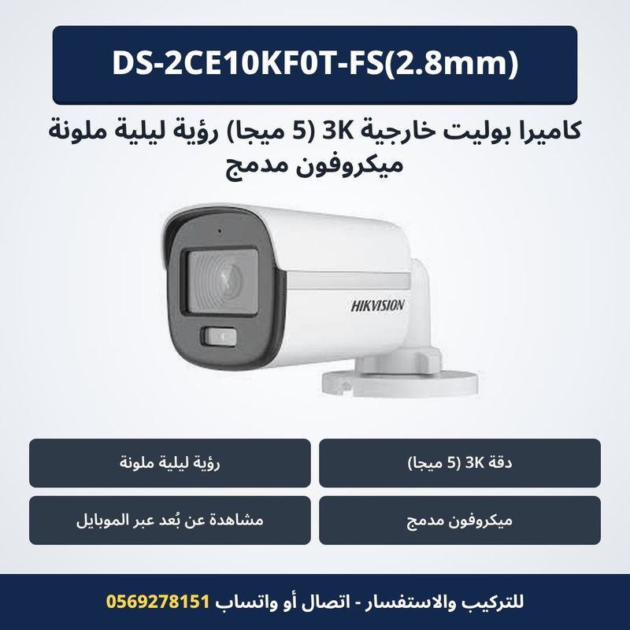

كل المنتجات ← كاميرات وأجهزة هيكفيجن
الموديل: DS-2CE10KF0T-FS(2.8mm)

| الماركة | هيكفيجن |
|---|---|
| الموديل | DS-2CE10KF0T-FS(2.8mm) |
| نوع المنتج | كاميرا بوليت خارجية |
| الكاميرا | |
| حساس الصورة | 3K CMOS |
| نظام الإشارة | PAL/NTSC |
| أقصى دقة | 2960 (H) × 1665 (V) |
| أدنى إضاءة | 0.001 Lux @ (F1.0, AGC ON), 0 Lux with white light |
| سرعة الغالق | PAL: 1/25 s to 1/50,000 s;NTSC: 1/30 s to 1/50,000 s |
| ليلي/نهاري | 24/7 Color Imaging |
| ضبط الزاوية | Pan: 0° to 360°, Tilt: 0° to 90°, Rotation: 0° to 360° |
| العدسة | |
| Lens Type | 2.8 mm, 3.6 mm fixed focal lens |
| Focal Length & FOV | 2.8 mm, horizontal FOV: 102°, vertical FOV: 56°, diagonal FOV: 122° 3.6 mm, horizontal FOV: 80°, vertical FOV: 45°, diagonal FOV: 96° |
| تركيب العدسة | M12 |
| الإضاءة | |
| Supplement Light Type | White Light |
| Supplement Light Range | Up to 20 m |
| الصورة | |
| معدل الإطارات | TVI: 3K@20fps, 4 MP@25fps/30fps, 1080p@25fps/30fps AHD: 5 MP@20fps, 4 MP@25fps/30fps CVI: 4 MP@25fps/30fps CVBS: PAL/NTSC |
| Wide Dynamic Range (WDR) | Digital WDR |
| Image Parameters Switch | STD/HIGH-SAT/HIGHLIGHT |
| Day/Night Mode | Color |
| White Balance | Auto/Outdoor/Global/Manual |
| Image Enhancement | DWDR, BLC, HLC, Global, HLS |
| Noise Reduction | 2D DNR |
| Image Settings | Brightness, Contrast, Mirror, Defective Pixel Correction, Sharpness, Anti-Banding, Smart Light, AGC |
| الواجهات | |
| Video Output | Switchable TVI/AHD/CVI/CVBS |
| Alarm | Solid Light Alarm (White Light) |
| الصوت | Built-in mic |
| عام | |
| Language | English |
| Operating Condition | -40°C to 60°C (-40°F to 140°F), Humidity: 90% or less (non-condensing) |
| الخامة | Metal |
| Communication | HIKVISION-C |
| الأبعاد | 161.1 mm × 70 mm × 70 mm (6.34" × 2.76" × 2.76") |
| Power | 12 VDC ± 25%, Max. 2.5 W, *You are recommended to use one power adapter to supply the power for one camera. |
| الاعتمادات | |
| Protection | IP67 |